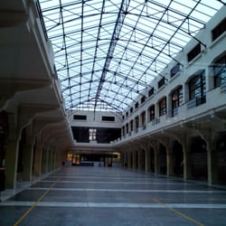
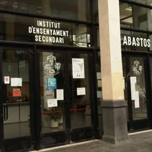
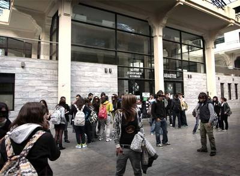

El I.E.S. Abastos es un centro de educación secundaria, bachillerato y ciclos formativos de grado medio y superior situado en la calle Alberique nº 18 de Valencia, en las antiguas instalaciones del Mercado de Abastos de la ciudad. Dichas instalaciones albergan además un complejo cultural-deportivo, diversas oficinas municipales, una sede de la Universidad Popular y una Comisaría de Policía. Estamos situados en un enclave urbano privilegiado que cuenta con estupendas conexiones con el transporte público urbano: bus, metro, Valenbisi, etc. que facilita la llegada de los alumnos que vivan en otras zonas de Valencia o en su área metropolitana. Contamos con un alumnado de una extracción social media, habiendo aumentado considerablemente el número de alumnos de procedencia extracomunitaria en los últimos años hasta situarse en torno al 18% del total de alumnos matriculados en la actualidad, fenómeno éste que no hace sino reflejar nuestra realidad social actual. El edificio data de los años 40 y fue proyectado por el arquitecto Javier Goerlich Lleó, autor entre otros del edificio Banco de Valencia, el Teatro Talia, el colegio Mayor Luis Vives, la Puerta del Mar o la restauración de la Iglesia de San Agustín. Tiene un estilo arquitectónico entre funcionalista y neocasticista.
|  |  |  |